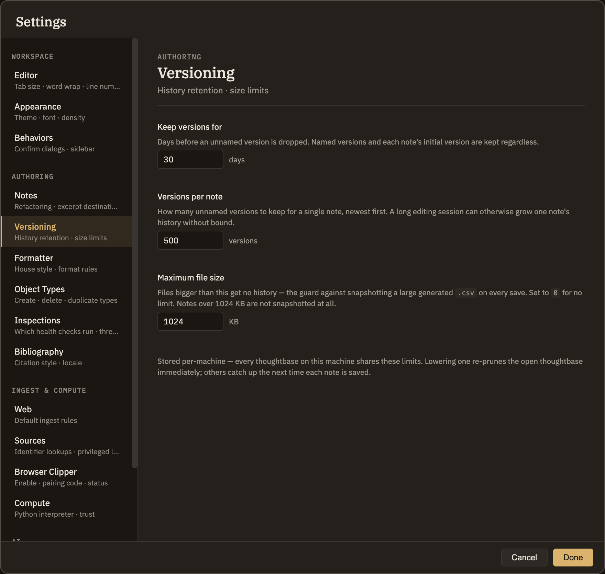

Versioning
Minerva keeps a copy of every version of every note you save, so you can read them and put one back from the History panel. That costs disk, and these three settings decide how much: how long a version lives, how many pile up for one note, and how big a file has to get before it stops being recorded.

The three limits
.csv isn't copied on every save. Set it to 0 if you'd rather have history on everything and have the disk for it.Neither limit touches a version you've named, or a note's initial version. A name is a deliberate "keep this", and the initial version is what "undo everything" gets you back to — losing either to a retention rule would defeat the point of keeping history at all. Neither is what fills a disk.
What happens when you lower a limit
The open thoughtbase is re-pruned as soon as you change a setting, so tightening a limit frees the disk immediately rather than gradually as you happen to edit each note. Other thoughtbases on this machine catch up the next time each of their notes is saved.
Pruning removes stored versions permanently. If there's a state of a note you want to survive a shorter retention window, name it first.
Per-machine, not per-thoughtbase
These limits are stored for this computer and apply to every thoughtbase you open on it — what they're budgeting is this machine's disk, and the same thoughtbase on a roomier machine can reasonably keep more. The history itself is per-thoughtbase: it lives in the .minerva folder beside the notes, so a thoughtbase carries its own past with it if you move it.
What gets recorded
Every save of every note — markdown and the .csv, .ttl and .py notes alike — whether the save came from you, from a thinking tool, or from restoring an earlier version. Attachments and images aren't notes and aren't recorded. Neither is anything inside .minerva itself.